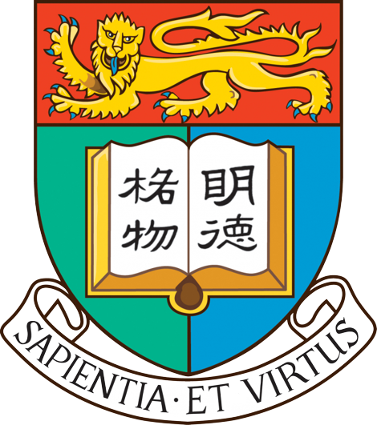
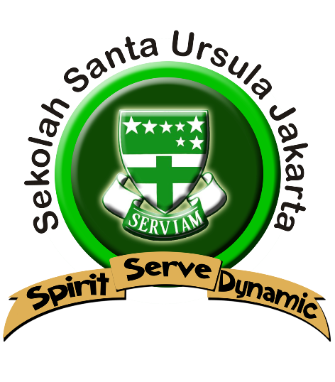

The University of Hong Kong
Engineering (Sep 2022 - Present)
Latest GPA: 3.85 (First Class Honours)
Activities and Societies:Relevant Coursework: Python (ENGG1330), C++ (ENGG1340), Data Structures and Algorithm (COMP2119); OOP and Java (COMP2396); Microeconomics (ECON1210); Linear Algebra, Probability, and Statistics (MATH1853); Calculus and ODE (MATH1851); Electricity and Electronics (ENGG1310)
Teaching Assistantship: C++ (ENGG1340)
Academic Honours: Belt and Road Scholarship Awardee (full tuition, renewable for all the years of study)

Santa Ursula Jakarta High School
GPA: 92.08/100
Extracurricular: Basketball, Cinematography, Girl’s Scout, Deutsch Club
Academic Honours:Societies and Achievements: